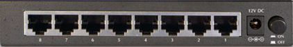
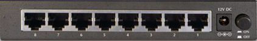

Switching using MXP's
Using the links below you are able to put each or both MXP's in to blockage.
TX Mute on MXP A goes high logic, Arbitrator will switch allowing the RX,TX and GPS to be connected to antenna B
TX Mute on MXP B goes high logic, Arbitrator will switch allowing the RX,TX and GPS to be connected to antenna A
TX mute/Blockage pin on MXP A and B have gone high logic. The Arbitrator will not switch, the RX and TX will stay connected to the last antenna because both antenna's have an error or blockage, the modem will be muted by the TX mute pin on the arbitrator modem port changing logic state. This logic default state is changed in the web GUI by the Mute Output Polarity.

TX Muted
 
